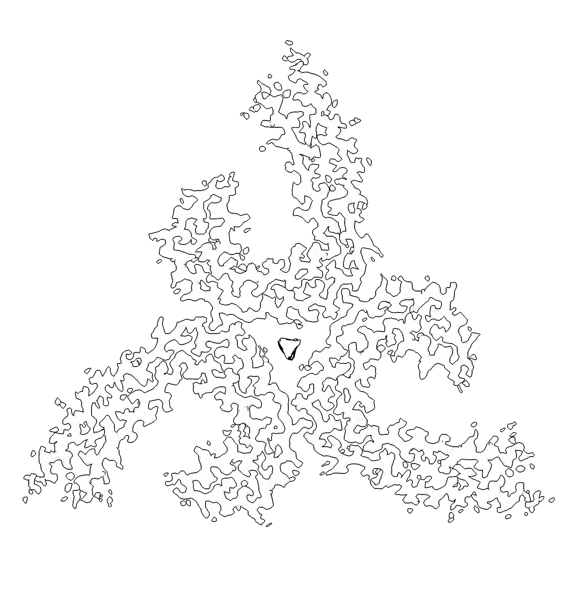

Our Research Projects

Structural Characterization of Amyloid Fibrils from Human Brain
Using cryo-electron microscopy, we determine high-resolution structures of amyloid fibrils extracted directly from human brain tissues. Our research aims to understand the molecular architecture and structural diversity of pathological filaments associated with neurodegenerative diseases including Alzheimer's disease, frontotemporal dementia, and related tauopathies.

The Molecular Mechanism of Transmembrane Signal Transduction
We investigate the structural and molecular basis of transmembrane signal transduction using structural biology and biochemical approaches. Our research focuses on the cAMP signaling pathway, gap junction intercellular communication, and the Hedgehog signaling pathway.